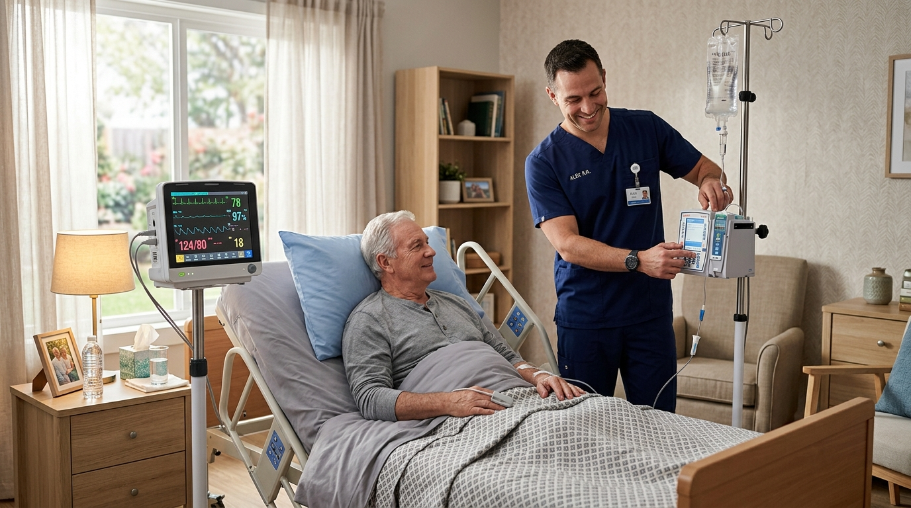

Hospital-Grade Care.
Recover Faster At Home.
Engineered specifically for complex surgical discharges, ventilator dependency, and advanced chronic illness. Continuous bedside clinical oversight under direct physician supervision.
Post-Acute Disease Management Protocols
Specialized recovery pathways designed to prevent clinical decompensation and emergency readmission.
Cardiac & Sternal Precaution
Telemetry rhythm tracking, INR / anti-coagulation lab monitoring, fluid retention checks, and progressive cardiac stamina re-education.
- Daily ECG & bi-daily BP telemetry
- Sternal wound inspection & VAC checks
- Low-sodium clinical diet compliance
Neuro & Post-Stroke Recovery
Hemiplegia support, dysphagia aspiration prevention, speech-language therapy, and neuroplasticity motor relearning exercises.
- Choking & swallow reflex screening
- Fine motor & transfer assistance
- Daily range-of-motion stretching
Complex Orthopedic Post-Op
Total hip & knee arthroplasty recovery, DVT thrombosis prevention, cryotherapy cooling compression, and assisted gait retraining.
- Continuous Passive Motion (CPM) devices
- Surgical staple removal & sterile dress
- Safe bathroom and bed transfer drills
Our 5-Phase Hospital Discharge Protocol
We bridge hospital release with home arrival so not a single medication or clinical order is missed.
Bedside Hospital Liaison Intake (Pre-Discharge)
Our clinical liaison meets directly with hospital caseworkers and attends final discharge rounding to collect all EHR charts.
Home Bio-Medical Setup & Sanitization (Morning of Discharge)
Hospital bed, oxygen concentrator, and biometric telemetry devices are delivered and tested in your room before the patient arrives.
Nurse Greeting & Vital Sign Stabilization (Hour 0)
Registered nurse greets patient at home transport, performs baseline vitals assessment, reconciles pharmacy meds, and sets up sterile IV lines.
Continuous 48-Hour Intensive Stabilization Window
The critical post-discharge window is monitored around-the-clock with dedicated shift nursing and direct physician communication.
Transition to Progressive Physical Rehab & Independence
Physical therapy and occupational therapy take lead, guiding the patient back to unassisted daily living activities.
ICU Technology in Your Home
Hospital-grade medical gear delivered, installed, and calibrated by licensed biomedical technicians.
Trilogy Ventilators
Invasive & non-invasive mechanical respiratory support with battery backup.
Alaris Infusion Pumps
Multi-channel precision titration for continuous IV medications and antibiotics.
Philips Vitals Monitors
Continuous multi-parameter SpO2, pulse, NIBP, and automated arrhythmia alerts.
Hill-Rom ICU Beds
Full electric multi-position beds with alternating pressure anti-bedsore mattresses.
Your Coordinated Clinical Care Circle
Each patient is surrounded by an integrated team of specialists meeting weekly to optimize recovery.
Medical Director (MD)
Reviews orders, titrates medications, and leads weekly case management conferences.
Primary Registered Nurse
Administers all skilled clinical protocols, manages infusions, and monitors vitals daily.
Doctor of Physical Therapy
Conducts targeted functional movement retraining and post-op gait recovery drills.
Clinical Dietitian (RD)
Formulates enteral feeding formulas and therapeutic renal / cardiac meal plans.
Proven Outcomes: Lower Mortality, Faster Functional Recovery
When compared against traditional sub-acute nursing facilities (SNFs), patients managed through CareTrust Post-Acute Home Care achieve independence 18 days faster with an 82% reduction in secondary infection rates.
Need Immediate Discharge Coordination Today?
Submit patient orders directly to our clinical triage directors or call for immediate bedside coordination.